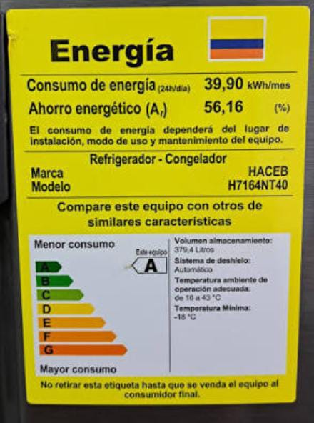
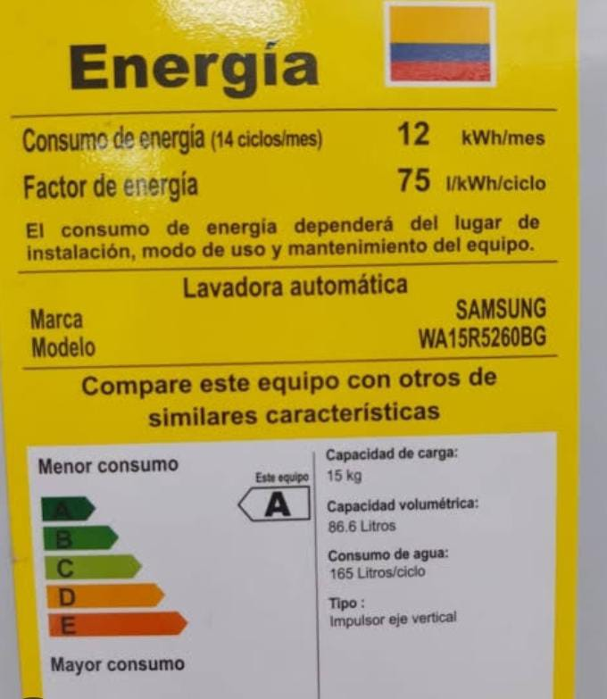
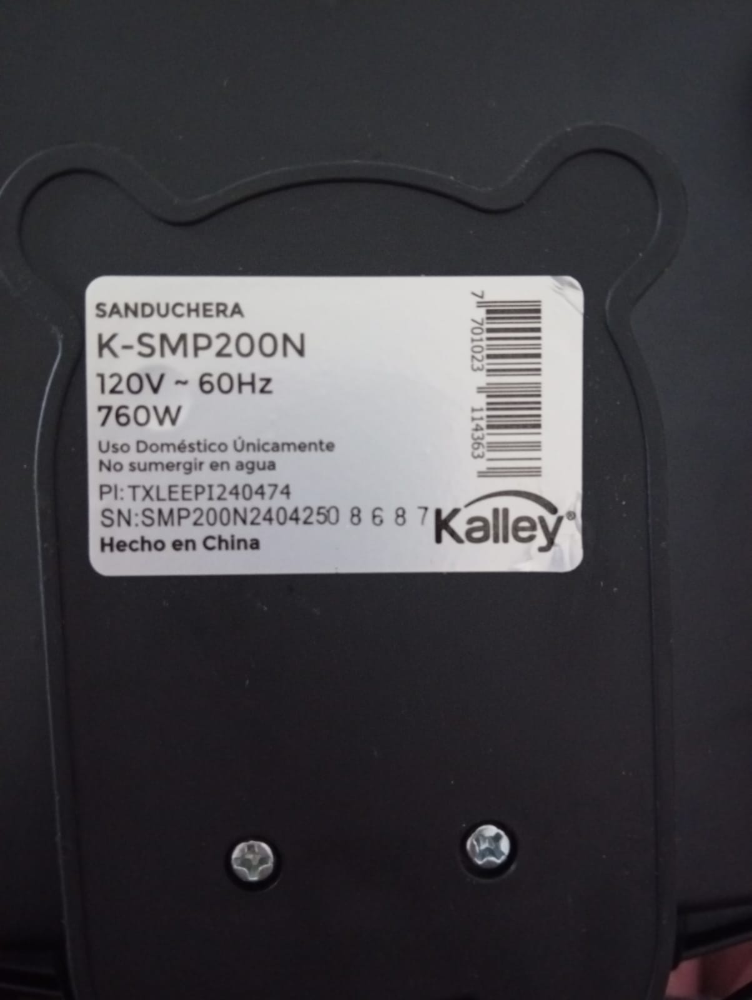
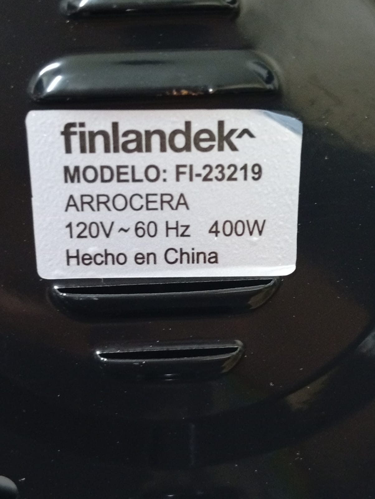

Consumo por equipo
Medí los 4 equipos que tienen ficha técnica. La ducha, el computador y otros aparatos no tienen etiqueta con su potencia, por eso no están en la tabla.
| Equipo | Potencia (W) | Horas de uso por día | kWh en la semana | Costo en la semana (COP) | |
|---|---|---|---|---|---|
| Lunes a viernes | Sábado y domingo | ||||
| Nevera | 55 (equivalente) | 24 | 24 | 9,31 | 8.400 |
| Lavadora | 857 (equivalente) | 1 (promedio) | 1 (promedio) | 6,00 | 5.414 |
| Sanduchera | 760 | 0,06 (promedio) | 0,06 (promedio) | 0,30 | 271 |
| Arrocera | 400 | 0,33 (promedio) | 0,33 (promedio) | 0,93 | 839 |
| Total de la semana | 16,54 | 14.924 | |||
- Nevera: su etiqueta no trae vatios, sino 39,90 kWh al mes. La potencia equivalente es 39,90 kWh ÷ 720 horas = 55 W, y está conectada día y noche.
- Lavadora: su etiqueta dice 12 kWh al mes por 14 ciclos, es decir 0,86 kWh por ciclo. La uso 2 horas cada 2 días (3,5 veces por semana) y en cada uso lavo 2 cargas, o sea 7 ciclos por semana (6 kWh), que equivale a 857 W durante esas 7 horas.
- Sanduchera y arrocera: las uso por minutos cada varios días (10 minutos cada 3 días y 40 minutos cada 2 días), por eso las horas son un promedio diario.
Proyección mensual de estos 4 equipos:
71 kWh al mes
(16,54 kWh × 30 ÷ 7). Se compara con la factura en la página
Mi factura.
¿Qué equipo gasta más?
La nevera: aunque su potencia es la más baja, está conectada las 24 horas y gasta cerca del 56 % de la energía de los 4 equipos medidos (9,31 de 16,54 kWh). Le sigue la lavadora con el 36 % (6 de 16,54 kWh).
Etiquetas de mis equipos



